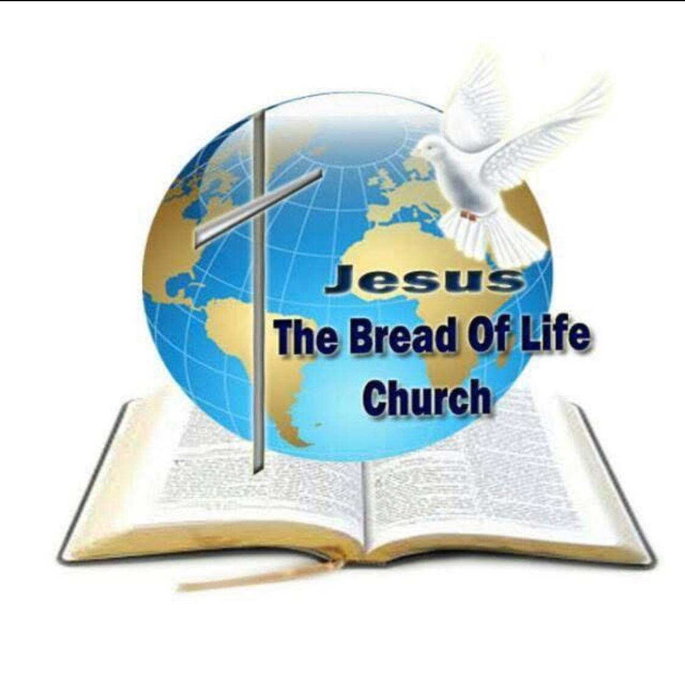
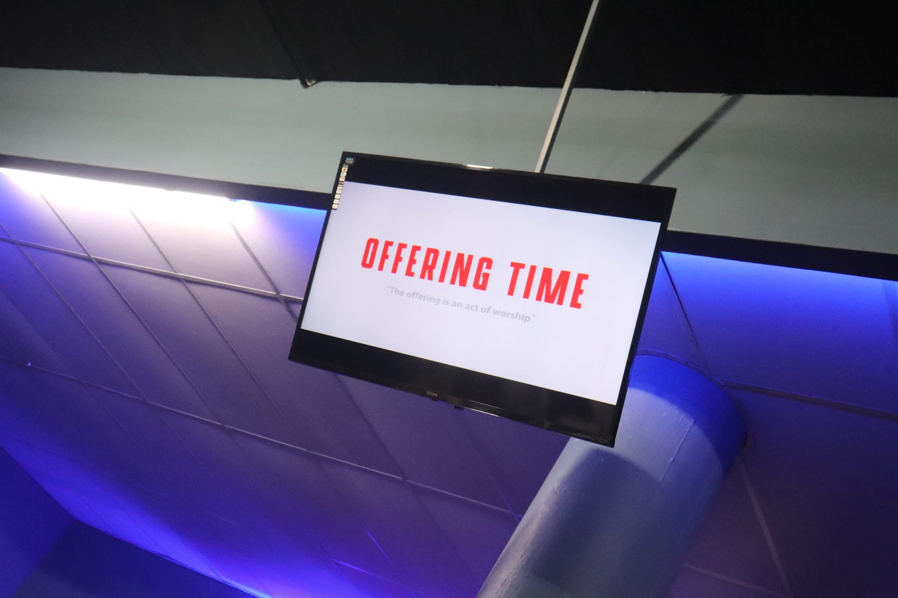
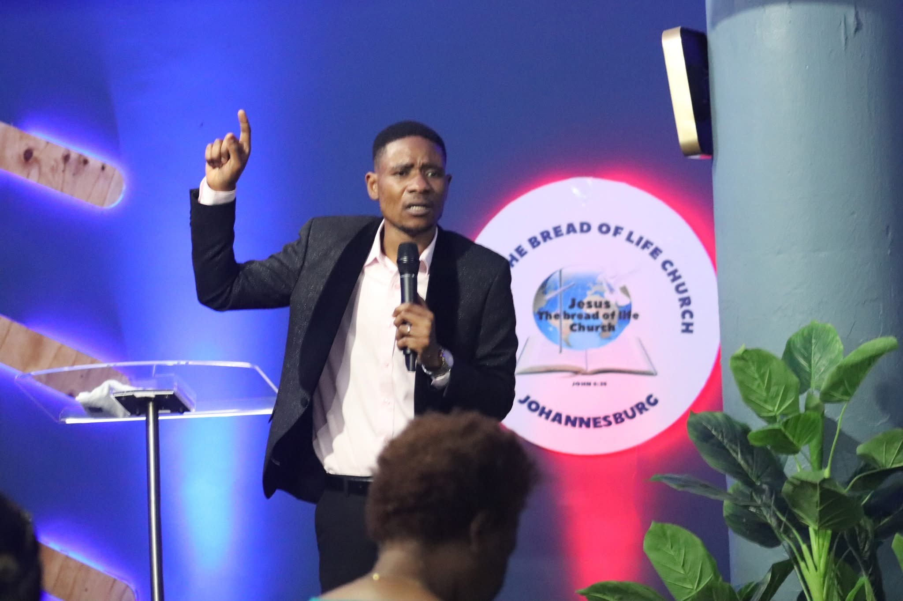
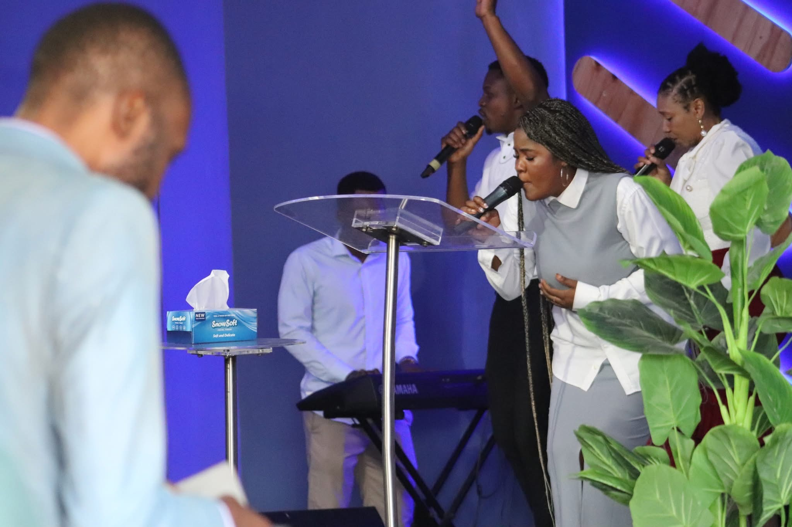
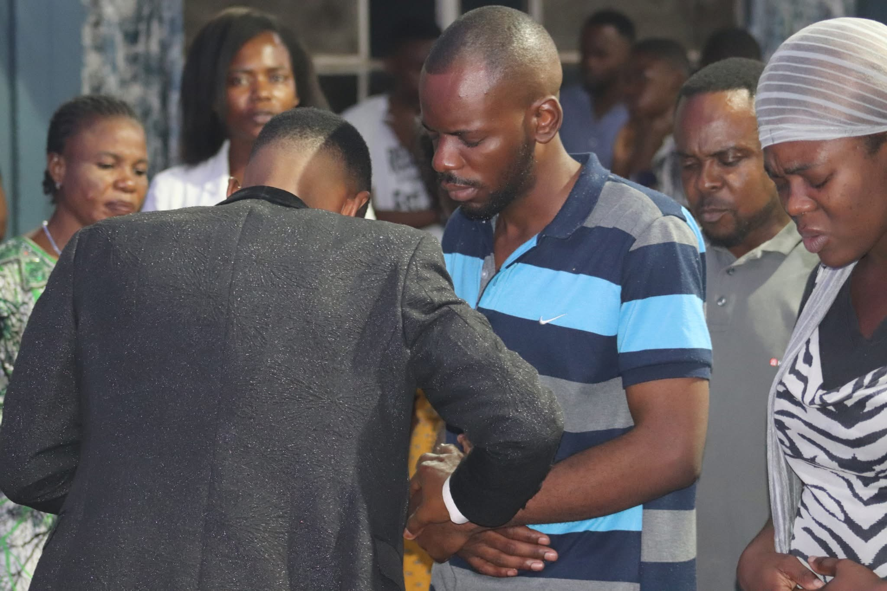

Your generosity helps us reach more lives with the message of Christ. Every seed you sow is used for the advancement of God's kingdom, touching hearts, transforming lives, and spreading the Gospel to every corner of the earth.
"Each of you should give what you have decided in your heart to give, not reluctantly or under compulsion, for God loves a cheerful giver."
— 2 Corinthians 9:7



Every gift, no matter the size, makes a significant difference in advancing God's kingdom. Thank you for partnering with us in faith and supporting the work of the ministry.
Your faithfulness in giving enables us to:
✓ Preach the Gospel boldly
✓ Support community outreach programs
✓ Minister to those in need
✓ Equip and disciple believers
✓ Maintain our facilities for worship
Come and worship with us during our weekly services. Your presence matters!